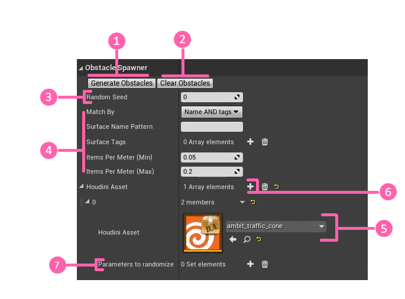
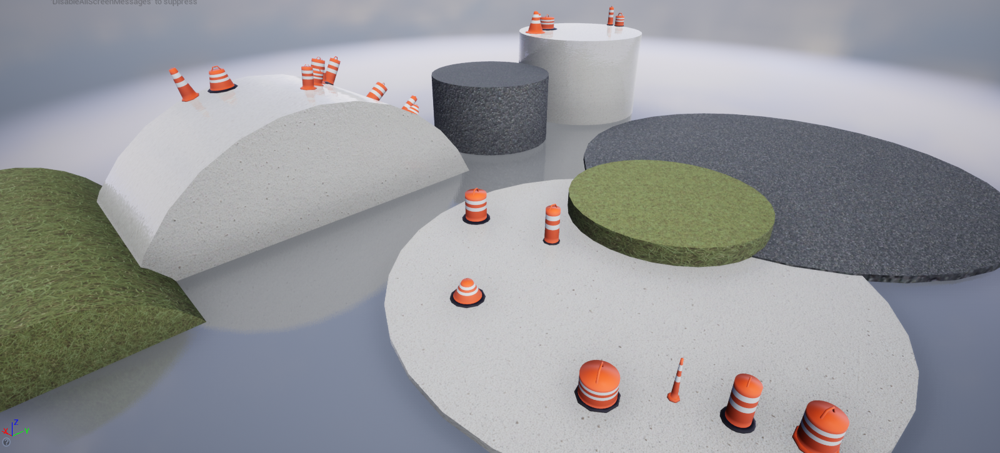

Spawn with Houdini Digital Assets Actor¶
Ambit provides a tool to enable easy placement and randomization of your Houdini Obstacles. This tool is called Spawn with Houdini actor and operates very similarly to the Spawn on Surface Ambit Spawner.
⚠️ Important: This spawner type leverages the Houdini Engine. Be sure you have installed both the Houdini Engine and the Houdini plugin for Unreal before using this tool. See the Setup section of this user guide for instructions.
Using Spawn with Houdini¶
The Spawn with Houdini works very similarly to the Spawn on Surface. The main difference being that you can trigger the generate by the Generate Obstacles button while in the editor, and can specify Houdini Digital Assets to be selected as what to spawn.
Houdini Digital Assets (HDAs) have the ability to surface user parameters for a user to update to customize what look the obstacle has.
While in the editor mode, the Spawn with Houdini instance allows users to
You can always change the randomization of locations and parameters by updating the
To dictate where the obstacles are spawned a
The user can select which HDA they want to spawn in bulk by selecting it as the

While in the play mode, the Spawn with Houdini will automatically generate with the settings specified. These assets will also automatically be removed once the play has finished. Note: The Spawn with Houdini will only generate obstacles in play mode if there has not already been spawned actors from the editor mode.

Further Usage¶
Multiple Spawn with Houdini actors can be placed on the scene, allowing users to create any number of settings to place HDA to the screen.
If you wish to spawn more assets using the same configuration, press the
You can customize which parameters are randomized from an HDA by adding their value into the